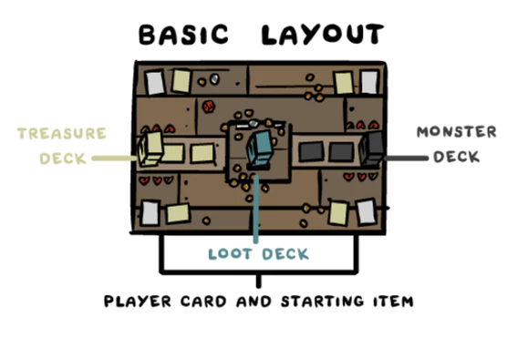
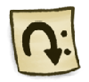
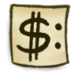
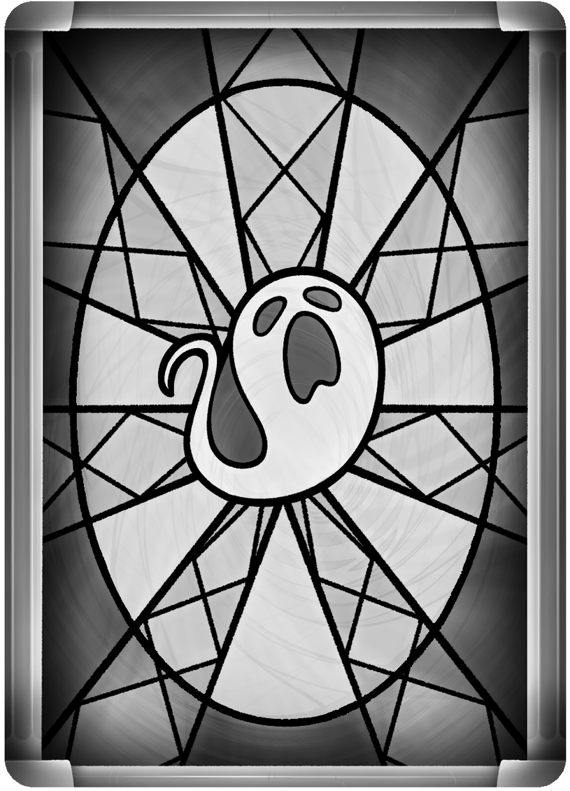
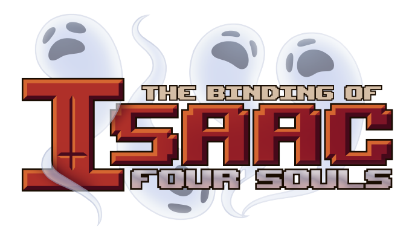

2-4 players take turns playing loot cards and using items to kill monsters in order to gain more items, loot, and sometimes souls. The first player to gain 4 souls is the winner. Cooperation, bartering, and betrayal are all strongly encouraged.
Shuffle the loot, monster, and treasure decks. Put out 100¢.
Place 2 monster cards face up next to the monster deck. These are the current active monsters, and each occupies an active monster slot. Place any non-monster cards revealed during set up on the bottom of the monster deck.
Place 2 treasure cards face up next to the treasure deck. These are the current shop items.
Shuffle the character deck and deal out one character card and their starting item to all players.
All players start with their character card deactivated (turned sideways). Everyone starts with their starting item recharged (turned upright). If you aren’t going first, you can activate your starting item before your first turn.
All players start with 3 loot cards and 3¢ from the supply of ¢.
Cain plays first. If Cain is not in play, then the saddest person plays first.
During their Action Phase , the active player may do any or all of the following in any order:
Loot cards are drawn and kept in your hand. Playing them can instantly change the flow of the game in many interesting ways. There are three different kinds of loot cards:
Basic Loot - Basic loot cards come in the form of coins, bombs, hearts, pills and the like, and are used to gain resources or aid in combat.
Tarot cards - Tarot cards are more advanced loot cards that can drastically change the course of the game.
Trinkets - These are rare loot cards. Once played, these act like treasure items and have passive effects. Place these cards face up on the table next to your item cards. They count as items when in play, and they stay in play until destroyed.
The monster deck is the meat and potatoes of the game. It’s filled with basic monsters, bosses, curses and other surprises.
Basic Monsters - Monsters that are easier to kill and yield loot, coins and on rare occasions, treasures.
Bosses - Difficult-to-kill monsters with bigger rewards that always yield souls when killed. When a boss is killed, it becomes a soul card and the active player gains it. This is how you keep track of souls.
Bonus Cards - Uncommon cards that may reward or kill the active player.
Curses - Rare purple cards that curse a player of the revealer’s choosing. The cursed player places the curse to the left of their character card. If they die, they discard all curses afflicting them.
Treasure cards are items that players can gain. Place treasure cards directly into play in front of the player, visible to everyone. They tend to have very strong effects that modify gameplay and interact with other players and monsters. When an effect says 'Gain Treasure,' it is taken from the top of the treasure deck.
Active Items - These items can be activated (turned sideways to use) at any time during your turn or in response to any action. Once an item has been activated, it can't be activated again until it’s recharged at the start of its owner's turn or by a recharge effect. Active items have a gold border and a turning arrow symbol.
Paid Items - These items can be used when you pay a specific cost. Like active items, you can use paid items in response to any action, but you can use them as many times as they are paid for. Paid items aren't turned sideways when you use them. Paid items have a gold border and $ symbol.
Passive Items - These items give players special abilities that usually change the rules of the game or modify existing effects with triggered abilities. These abilities don't require activation. Passive items have silver borders.
When a player rolls a dice initially, the roll goes onto the stack (see Stacking Effects). There are many ways to modify the roll before it resolves (affects the game) and either triggers effects or deals damage. Apply modifiers in the following way:
Rolls and a monster's dice number can’t go above 6 or below 1.
Your 'first roll' for the turn or combat is until a roll resolves or fizzles (see Fizzling).
Health
Dice Number Dice roll needed to hit
Attack Damage this deals if attacker miss
Reward for killing
Soul(s) gained for killing
Players may attack once a turn during their action phase. A single attack may have many dice rolls involved.
If a player decides to attack, they must declare what they are attacking to all players. Players can attack either one of the active monsters, or the topmost card of the monster deck. Once a player declares the target of their attack, combat starts. Combat ends normally when either the player or monster dies.
If a player attacks the topmost card of the monster deck, they reveal the card to all players.
If it is a monster card, place it face up over one of the active monsters; the active player chooses where to put it. The topmost monster card in an active monster slot is always the active monster in that slot. Only active monster effects can trigger.
If it is a non-monster card, the active player reads it to all players and follows the directions on the card. This counts as that player's attack for the turn.
When a player attacks a monster card, they roll a D6.
If the roll resolves to a number equal to or greater than the monster’s dice number, the player deals damage equal to their attack to that monster. Use a dice to keep track of damage done to monsters during the turn.
If the roll resolves to a number less than the monster’s dice number, they miss and take damage equal to the monster’s attack.
The attacking player continues rolling until either they or the monster is killed.
Whenever a monster is killed (not necessarily in combat):
Whenever a monster slot is empty:
If an active monster slot is empty, the active player reveals the top card of the monster deck to place a monster card in it. If the revealed card is a non-monster card, the active player follows the directions on the card, repeating this process until a new monster card is put into the slot. This can happen outside of combat whenever a slot empties. Remember, the active player always gets all penalties and rewards from revealing monster deck cards.
It is possible to kill monsters outside of combat with effects. These actions do not constitute an attack for the turn.
When a player takes lethal damage or dies for any reason, that player suffers “The Death Penalty!” They must:
You can only die once per turn, and you will heal back to full at the next ending phase. Dying removes you from combat (see Leaving Combat under Fizzling).
If the active player and a monster die at the same time, resolve the monster’s death before the player's death so that rewards are still given.
Empty active monster slots must be filled at the end of the turn. This could happen when the active player dies while trying to fill a slot. After all end-of-turn effects are done resolving, but before players and monsters are healed, the active player (usually currently dead) reveals and resolves any non-monster cards until all empty slots are full.
Death goes onto the stack. Players can play effects in response (see Stacking Effects). Preventing or fizzling death sets your health to 1 if you were at 0.
Some effects cancel other effects. In addition, effects can sometimes be cancelled by the state of the game changing before they resolve. When the latter happens, the effect fizzles.
Invalid Targets - Players must declare targets when playing effects. In addition, some effects require a certain condition to resolve. When a target leaves play or becomes untargetable for any other reason, or when a condition is not met when an effect resolves, the effect fizzles.
Leaving Combat - If an attacking player is removed from combat for any reason, any combat roll or combat damage on the stack fizzles. This can be from the player or monster dying, an effect cancelling the attack/combat, or an effect ending the turn.
Most events go onto the top of the stack (the place where effects wait to resolve). The following are all of the events that use the stack:
In addition to these events, there are two opportunities every turn to play effects. These are during the starting and ending phases.
When there are no more effects to add to the stack, the effects on the stack resolve one at a time in reverse order. The most recent effect resolves first, then the 2nd most recent, until all effects are resolved ending with the initial effect.
Players can play effects in response to whatever effect is currently on top of the stack (i.e. would resolve next). As mentioned earlier, some effects can be cancelled or “fizzled” due to its target being gone or its condition no longer being met, perhaps due to an effect that resolved first. Once the stack is empty, the active player can make another action or otherwise progress their turn.
Conceptually, think of each effect as a physical card, and as effects are played, you are piling the cards on top of each other. To find out what happens next, you take the top card off of the stack of cards and do what it say until the pile is empty.
If multiple effects trigger at the exact same time, they are put onto the stack in the following order:
Example 1: Player 1 decides to attack an active Monster that needs a 4 or higher dice roll to deal damage. Player 1 rolls their dice to see if a hit lands, and they roll a 3. In response to this roll, Player 2 offers to raise the roll by 1 with their Book of Belial in exchange for 2¢. Player 1 agrees, pays them, and Player 2 activates the Book of Belial to raise the roll to a 4. Out of nowhere, Player 3 decides to activate their D6 in response, forcing Player 1 to reroll the dice! No one else has any response to this, so each effect now plays out in reverse. Player 3 rerolls the dice and rolls a 1; Player 2 adds +1 to that dice making it a 2, then the dice resolves. Seeing as they needed a 4+ in order to land that attack, Player 1 misses and the attack fails.
Example 2: Player 1 activates their Book of Sin item and rolls a 3 to Loot 1. In response, Player 2 uses their Sleight of Hand item to look at the top 3 cards of the loot deck and put them back in any order. No other effects are played. Player 2 looks at the top 3 cards, rearranges them so a single penny card is placed on the top. Then Player 1’s Loot 1 effect resolves, and they draw a single penny… :(
When a player gains a soul, whether from a boss dying or an item/loot card, they gain the card as a soul card. It now counts towards the players total soul count. The first player to have 4 souls wins the game.
Once players have a better understanding of the game’s mechanics, you are encouraged to add the Bonus Souls to your games. These bonus cards are not added to any deck, but instead they lay face up next to the game in view of all the players.
The first player to have 25¢ or more instantly gains the Soul of Greed. The first player to have 10 or more loot cards in their hand instantly gains the Soul of Gluttony. The first player to have 2 or more Guppy items in their possession instantly gains the Soul of Guppy.
These souls, once gained, act like any other soul card. While there are ways to get back other souls that have been discarded, the bonus souls can only be gained once per game. If these soul cards are ever discarded, they are placed face down next to the game.
Players are encouraged to trade for favors or nefarious acts. When bartering, a player can pay another player any amount of ¢ for practically any favor. Player's can't trade items or loot in this fashion. Both players must agree to the exchange of ¢. Players can't give ¢ away for no reason. Bartering does not use the stack.
Once paid, promises don't have to be kept. Be warned: if you go back on your promises, it will be hard for others to trust you.
Lead Design & Art Direction -
Edmund McMillen
Additional Design & Production -
Danielle McMillen
Additional Design -
Tyler Glaiel
Layout/Background Art & Illustration -
@TikaraTheMew
Card Back Design/Box Art & Illustration -
@KrystalFlamingo
Figure Design & Illustration -
@Rojen241
Illustration -
@Wormchild and @Tar_Head
Business Development (Studio71) -
Javon Frazier and Garima Sharma
Testers -
Jackson Moore, Tyler Glaiel, Danielle McMillen, George Fan, Eli Evans, Acacia Evans, Jay Lewis, Graeme Little, Leon Masters, Dan Zaelit, Cole O’Brien, Doug O’Brien, Crystal Evans, Joe Evans, Alex Austin, Caitlyn Yantis, Peach McMillen.
Rule Rewrite by
Jon Paull (@jonzo11)
Editing by Iris Bull (@ibull)
Version 1.0
They own nothing here.
Active Player - The player whose turn it is.
¢ - There are only 100¢ available. When it runs out, players need to spend or lose ¢ to increase the supply.
Counters - Counters are markers you place on specific cards that ask for them. They can be represented by anything you'd like (stone, dice, coin, booger). If a card with counters is stolen, the counters stay on it.
Damage Prevention - Damage prevention is used to cancel incoming damage to a target. If not used immediately, the prevention stays until the end of the turn.
Deactive - Items turned sideways are considered deactivated, and can't be activated until recharged.
Destroy - When a card is destroyed, it is placed in the appropriate discard pile. Destroying a monster counts as killing it.
Discard - Send to the appropriate discard pile. After a loot card is played, it is discarded. Discarding monsters yields no rewards. When a shop item or active monster is discarded, replace them if their slot becomes empty.
Expand - Effects can expand the shop or the number of active monsters. Fill the new slots from the top of the correct deck.
Loot X - Draw X cards from the loot deck.
Play - Items owned by players and items in the shop are considered 'in play.'
Steal/swap - Unless an effect says otherwise, the stealing/swapping player chooses what to steal/swap.
The Lost - The soul attached to The Lost cannot be discard, stolen, or lost in any way.
Eden - Cards with "destroy this" don't function with Eden because they gain eternal. Glass Cannon, for example, is overpowered as an item for Eden, as it can be used and never destroyed.
Butter Bean! - When you cancel a loot card on the stack, the loot card is discarded first, then Butter Bean. Butter Bean can cancel Lost Soul and trinkets while they are on the stack, because they are not items/soul cards (i.e., still loot cards) until they resolve.
Counterfeit Penny - This doesn't trigger when stealing ¢. The effect is not an additional instance of gaining ¢.
O. The Fool - You can play this with your death on the stack to live. The death effect fizzles, you still move to the ending phase, but you are left with your original hit points (or 1 if it was lethal damage that killed you).
VIII. Justice - You gain loot and ¢ equal to the difference between what you have and the target has. Imagine that you have 2 cards and 3¢, and your opponent has 5 cards and 1¢. You play Justice and loot 3 cards (up to 5) but gain 0¢ (you had more).
Ambush - You don't need to make the attacks right away.
Cursed and Holy monsters - Effects on these monsters can trigger outside of combat. Most other monsters with dice roll triggers only trigger when you are attacking them.
Daddy Haunt - The effect adds 1 to the total damage you take. It isn't an additional instance of damage.
Devil Deal - For the third option, you can't use the item before taking 2 damage.
Dinga - If you kill on a 6, roll once and double for the total ¢ gained.
Greed! - The richest player is chosen when Greed! Resolves.
The Haunt - The effect triggers for every 2 points of cumulative damage it takes in a turn. The damage does not have to be dealt in a single instance.
"Healers" (Boil , Chub , Mega Fatty, Holy Dinga) - Players and monsters cannot heal above their current max health.
Ragman - Ragman's effect can undo getting the soul, potentially keeping a player from winning.
9 Volt - You can use recharged items before the next turn. (When the stack is empty, you can still add effects before the active player progresses the turn.)
Blank Card - Multiple activations of this do not further multiply an effect. If the effect doubled requires a roll, just roll once and double the effect. Can't duplicate trinkets or Lost Soul. In general, this doubles any countable quality of an effect. For specifics, see the Appendix.
Diplopia/Modeling Clay - Copying Dead Cat sets the counters on these to 9 every time. Copying other cards with counters does not copy the counters. Counters stay on these after they stop copying a card. If you copy any other card that uses counters, the preexisting counters remain and can be used.
Crystal Ball - You can respond to the intent to roll with Crystal Ball.
Glass Cannon - If you put more than one activation on the stack, the first effect that destroys it fizzles the rest.
Lazarus' Rags - Functionally, this will trigger at Step 1 of the ending phase, at the same time end-of-turn effects trigger.
Mom's Shovel - Won't recharge until it is under a player's control during their recharge step.
Monster Manual - You can force an attack against the top of the monster deck. You can force an additional attack. You can force attacks outside of the action phase. This will fizzle if used against a player in combat. This will fizzle if the active monster targeted is discarded before this resolves.
Ouija Board - The active player resolves the non-monster card played.
Remote Detonator - Vote in turn order starting with the active player.
Sacred Heart/Dad's Lost Coin/ The Missing Page - These effects trigger at Step 3 of dice rolling. They can be fizzled if the roll is modified to a number that doesn't meet their condition when their effect resolves.
Shadow - If there are more than one, they trigger in turn order, then whichever resolves last gets to choose/ receive stuff.
Flush - Put all shop items not being purchased on the bottom…
Broken Ankh - Each time you would die, roll…
Dad's Lost Coin - When anyone would roll a 1, you may force that player to reroll it.
The Dead Cat - Each time you would take damage…
Guppy's Collar - Each time you would die, roll…
Guppy's Hairball - Each time you would take damage, roll…
The Missing Page - When anyone would roll a 5, you may force that player to reroll it.
Sacred Heart - Each time you would roll a 1, you may turn it into a 6.
Void - Discard an active monster that is not being attacked or a shop item not being purchased.
We Need To Go Deeper - ...back on top of the monster deck in any order.
Multiple activations of Blank Card do not further multiply an effect. Blank Card cannot duplicate trinkets or Lost Soul. In general, this card doubles any countable quality of an effect. See below for specific interactions. The doubled effect is listed.
2 Cents! - Gain 4¢.
3 Cents! - Gain 6¢.
4 Cents! - Gain 8¢.
A Dime!! - Gain 20¢.
A Nickel! - Gain 10¢.
A Penny! - Gain 2¢.
A Sack - Loot 6.
Blank Rune - Roll: 1: Everyone gains 2¢. 2: Everyone loots 4. 3: Everyone takes 6 damage. 4: Everyone gains 8¢. 5: Everyone loots 10. 6: Everyone gains 12¢.
Bomb! - Deal 2 damage to a monster or player.
Butter Bean! - Doubling has no effect.
Charged Penny - Gain 2¢, then recharge an item.
Credit Card - Doubling has no effect.
Dagaz - Choose one: Destroy a Curse. Prevent 2 damage to any player.
Dice Shard - Doubling has no effect.
Ehwaz - Doubling has no effect.
Gold Bomb!! - Deal 6 damage to a monster or player.
Holy Card - Doubling has no effect.
Lil Battery - Doubling has no effect.
Jera - Loot 2 times X, where X is equal to the number of loot cards in your hand.
Joker - Loot at a player's hand, you may steal two loot cards from it.
Mega Battery - Doubling has no effect.
Pills! (blue) - Roll: 1-2: Loot 2. 3-4: Loot 6. 5-6: Discard 2 loot.
Pills! (red) - Roll: 1-2: +2 attack till the end of turn. 3-4: +2 health till the end of turn. 5-6: Take 2 damage.
Pills! (yellow) - Roll: 1-2: Gain 8¢. 3-4: Gain 14¢. 5-6: Lose 8¢.
Pills! (purple) - Roll: 1-2: Recharge all of your items. 3-4: +2 to your dice rolls till the end of turn. 5-6: -4 to your dice rolls till the end of turn.
Soul Heart - Prevent 2 damage to any player.
Two of Diamonds - Quadruple the number of cents a player has.
O. The Fool - Doubling has no effect.
I. The Magician - Doubling has no effect.
II. The High Priestess - Choose a player or monster, then roll: Deal damage to that target equal to 2 times the number rolled.
III. The Empress - A player gains +2 attack and +2 to all dice rolls till the end of turn.
IV. The Emperor - Look at the top 10 cards of the monster deck. Put 8 on the bottom of the deck and 2 back on top in any order.
V. The Hierophant - Prevent up to 4 damage dealt to a player or monster.
VI. The Lovers - A player gains +4 health till the end of turn.
VII. The Chariot - A player gains +2 attack and +2 health till the end of turn.
VIII. Justice - Doubling has no effect.
IX. The Hermit - Look at the top 10 cards of the treasure deck. Put 8 on the bottom of the deck and 2 back on top in any order.
X. Wheel of Fortune - Roll: 1: Gain 2¢. 2: Take 4 damage. 3: Loot 6. 4: Lose 8¢. 5: Gain 10¢. 6: Gain +2 treasure.
XI. Strength - A player gains +2 attack till the end of turn and may attack two additional times.
XII. The Hanged Man - Look at the top card of all decks. You may put those cards on the bottom of their decks, then loot 4.
XIII. Death - Doubling has no effect.
XIV. The Tower - Roll: 1-2: All players take 2 damage. 3-4: All monsters take 2 damage. 5-6: All players take 4 damage.
XV. The Devil - Doubling has no effect.
XVI. Temperance - Choose one: Take 2 damage: gain 8¢. Take 4 damage: gain 16¢.
XVII. The Stars - Gain +2 treasure.
XVIII. The Moon - Look at the top 10 cards of the loot deck. Put 8 on the bottom of the deck and 2 back on top in any order.
XIX. The Sun - If it is your turn, gain two additional turns after this one. Put this card on the bottom of the loot deck.
XX. Judgement - Choose the player with the most souls or tied for the most souls. That player discards two soul cards they control.
XXI. The World - Look at all player's hands, then loot 4.